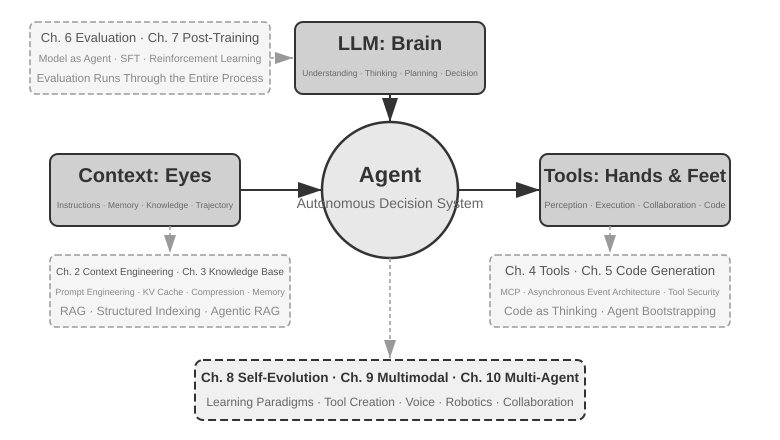
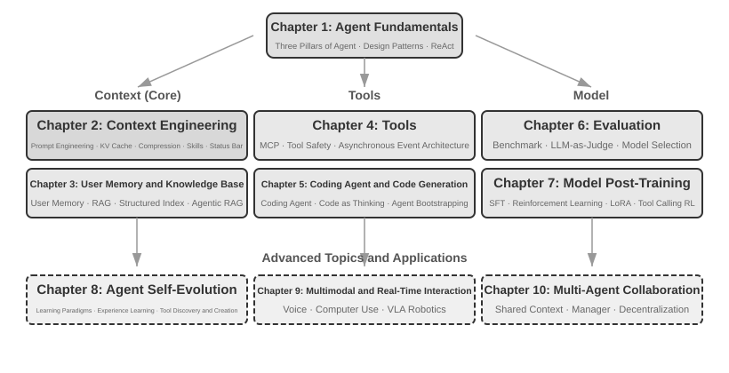

அறிமுகம்¶
ஆகஸ்ட் முதல் அக்டோபர் 2025 வரை, சீனத் தொழில்நுட்பப் பதிப்பகமான டூரிங் (Turing) நடத்திய "AI Agent Bootcamp" இல் தொடர்ச்சியான தொழில்நுட்ப விரிவுரைகளை நிகழ்த்தினேன். நோக்கம் எளிமையானது: AI ஏஜெண்ட் வடிவமைப்பை உள்ளுணர்வு சார்ந்ததிலிருந்து கொள்கை சார்ந்ததாக மாற்றுவது—ஒரு டெமோவை இயக்கிக் காட்டுவதோடு நின்றுவிடாமல், ஒரு ஏஜெண்ட் ஏன் அப்படி வடிவமைக்கப்பட்டுள்ளது என்பதையும், ஒவ்வொரு கட்டமைப்பு முடிவின் பின்னணியில் உள்ள பரிமாற்றங்கள் (trade-offs) என்ன என்பதையும் புரிந்துகொள்வது. இந்த நூல் அந்த விரிவுரைகளின் குறிப்புகள் மற்றும் சோதனைகளிலிருந்து தொகுக்கப்பட்டு விரிவாக்கப்பட்டது.
ஆரம்ப யோசனையிலிருந்து இறுதிக் கையெழுத்துப் பிரதி வரை, இந்த நூல் விஸ்பர் கோடிங் (whisper coding, சொல்வதெழுதுதல் அடிப்படையிலான கூட்டுப்பணி) என்று அழைக்கக்கூடிய முறையில் உருவானது—நான் சொல்லச் சொல்ல எழுதிக்கொண்ட கருவி, எங்கள் சொந்தக் குரல் ஏஜெண்டான Pine தான். ஒவ்வொரு விரிவுரையையும் தயாரிக்க, முதலில் ஒரு தோராயமான வெளிக்கோட்டை வாய்மொழியாகச் சொல்லி, தலைப்பை அது ஆய்வு செய்யச் செய்து, ஒரு முதல் வரைவைத் தொகுக்க விடுவேன். விரிவுரைக்குப் பிறகு, Bootcamp மாணவர்களின் கருத்துகளை அதனிடம் கொண்டு வந்து, பல சுற்றுகள் விவாதித்துச் செம்மைப்படுத்துவோம்; இப்படி மறுசெயலுக்கு மறுசெயல், அந்த விரிவுரைக் குறிப்புகள் இன்று நீங்கள் கையில் வைத்திருக்கும் நூலாக வளர்ந்தன. இந்தச் செயல்முறை முழுவதும் நான் தட்டச்சு செய்தது அரிது; எனது எண்ணங்களை வாய்விட்டுப் பேசினேன். பேச்சின் அலைவரிசை (bandwidth) தட்டச்சை விட மிக அதிகம் (சாதாரண பேச்சு வேகம் தட்டச்சு வேகத்தை விட சுமார் நான்கு மடங்கு), எனவே "சொல்—ஆய்வு—விவாதம்—திருத்தம்" சுழற்சி வேகமாக ஓடியது. ஒரு வகையில், இந்த நூல் ஏஜெண்டுகளைப் பற்றியது மட்டுமல்ல; ஒரு ஏஜெண்ட் உருவாக்க உதவிய படைப்பும் ஆகும்.
2025 ஆம் ஆண்டின் தொடக்கத்தில் DeepSeek R1 வெளியானதிலிருந்து, AI துறையானது தூய அடித்தள மாதிரி நிலையிலிருந்து (அதாவது, பொது-நோக்க பெரிய மொழி மாதிரி முதுகெலும்புகள்) வெளிப்பட்டு, பொறியியல் செயலாக்கத்தின் ஆழமான நீரில் நுழைந்துள்ளது. மாதிரி அடுக்கில் (model layer) முன்னேற்றத்தை இரண்டு திசைகளில் இருந்து காணலாம்: ஒருபுறம், Agentic Reinforcement Learning மூலம், மாதிரிகள் தங்கள் அளவுருக்களுக்குள் கருவி அழைப்புத் திறன்களைப் பயிற்றுவித்து, குறியீடு, கணிதம், கணினி பயன்பாடு போன்ற துறைகளில் பொதுவான திறன்களைக் கைவரப் பெற்றுள்ளன. மறுபுறம், மாதிரிகளின் மறுசெயல் வேகம் தொடர்ந்து அதிகரித்து வருகிறது—GPT-5.2 முதல் GPT-5.5 வரை, Claude Opus 4.5 முதல் 4.8 வரை, ஒவ்வொரு தாவலுக்கும் ஆனது அரை ஆண்டே. தயாரிப்பு அடுக்கில் (product layer), Manus, Claude Code, மற்றும் OpenClaw போன்ற பொது ஏஜெண்டுகள் மனித-கணினி இடைவினையை மறுவரையறை செய்து, "குறியீடு உருவாக்கம் + கோப்பு முறைமை" கட்டமைப்பு முன்னுதாரணத்தை முக்கிய நீரோட்டத்திற்குத் தள்ளியுள்ளன.
நான் கிட்டத்தட்ட ஒரு வருடத்திற்கு முன்பு பாடத்திட்டத்தில் சுருக்கமாகக் கூறிய ஏஜெண்ட் கட்டமைப்பு வடிவமைப்புக் கொள்கைகளைத் திரும்பிப் பார்க்கும்போது, மகிழ்ச்சியும் ஆச்சரியமும் தரும் ஒரு கண்டுபிடிப்பைச் செய்தேன்: இந்தக் கொள்கைகள் காலாவதியாகவில்லை; மாறாக, அவை மேலும் மேலும் கிளாசிக்காக மாறிவிட்டன. ஏஜெண்ட் துறையில் பின்னர் Skill, harness, loop engineering போன்ற புதிய சொற்கள் தோன்றியிருந்தாலும், உண்மையான வரிசை இதற்கு நேர்மாறானது: Anthropic போன்ற நிறுவனங்கள் முதலில் இந்தக் கருத்துகளைக் கண்டுபிடித்து, பின்னர் பல ஏஜெண்ட்கள் அவற்றைப் பயன்படுத்தத் தொடங்கின என்பதல்ல; மாறாக, ஏராளமான ஏஜெண்ட்கள் ஏற்கனவே இதைச் செய்து கொண்டிருந்தன, பின்னர் Anthropic அவற்றைச் சுருக்கி, கட்டமைப்பு வடிவமைப்புக் கொள்கைகளாகத் தொகுத்தது. நடைமுறை முதலில், பெயரிடுதல் பின்னர்தான்.
இந்தக் கொள்கைகளுக்குப் பின்னால் உள்ள நம்பிக்கையானது, ஏஜெண்ட்களை நீண்ட கால, அதிக ஆபத்துள்ள சூழ்நிலைகளுக்குத் தள்ளும் நிஜ உலக நடைமுறையிலிருந்து வருகிறது. Pine AI இன் தலைமை விஞ்ஞானியாக, எனது குழுவும் நானும் Pine ஐ உருவாக்கினோம். எனது அறிவின்படி, இது உண்மையான நபர்களுடன் தன்னாட்சியுடன் தொடர்பு கொள்ளவும், பணம் சம்பந்தப்பட்ட உணர்திறன் மிக்க, சிக்கலான, நீண்ட கால பணிகளை நம்பகத்தன்மையுடன் சொந்தமாகக் கையாளவும் வல்ல முதல் பொது ஏஜெண்ட் ஆகும்: இது பயனர்களின் சார்பாகத் தொலைத்தொடர்பு நிறுவனங்களை அழைத்துக் கட்டணங்களைக் குறைக்கப் பேச்சுவார்த்தை நடத்துகிறது, வணிகர்களிடம் பணத்திருப்பமும் புகார் தீர்வும் கோருகிறது, சந்தாக்களை ரத்து செய்கிறது—இவை அனைத்தும் மனிதத் தலையீடு இல்லாமல். இத்தகைய பணிகள் பெரும்பாலும் டஜன் கணக்கான சுற்றுப் பேச்சுவார்த்தைகளை உள்ளடக்கும், மேலும் ஒரு தவறு கூட உண்மையான நிதி இழப்பை ஏற்படுத்தும். நம்பகத்தன்மை மீதான இந்தக் கடுமையான தேவையே, இந்த நூல் மீண்டும் மீண்டும் திரும்பி வரும் கட்டமைப்புக் கொள்கைகளை ஒவ்வொன்றாக வெளிக்கொணர்ந்தது. பின்வரும் எடுத்துக்காட்டுகள் இந்த நடைமுறையிலிருந்து வந்தவை.
- Skill என்ற கருத்து பிரபலமடைவதற்கு நீண்ட காலத்திற்கு முன்பே, prompt bloat பிரச்சினையைத் தீர்க்க dynamic prompt loading ஐயும், tool list bloat பிரச்சினையைத் தீர்க்க command-line execution tools ஐயும், Agent செயலாக்கச் சூழல், பயனர் நேரம் அல்லது பணி நிலையை உணராமல் இருப்பதைத் தீர்க்க system status bar தொழில்நுட்பத்தையும் நாங்கள் ஏற்கனவே பயன்படுத்தி வந்தோம்.
- harness என்ற கருத்து பிரபலமடைவதற்கு நீண்ட காலத்திற்கு முன்பே, மாதிரியின் tool call நிலையற்ற தன்மை, மாயத்தோற்றங்கள், ஆபத்தான செயல்பாடுகள், அங்கீகரிக்கப்படாத செயல்பாடுகள் மற்றும் அறிவுறுத்தல்களைப் பின்பற்றாமை போன்ற பிரச்சினைகளைத் தீர்க்க Claude Code ஐப் போன்ற முறைகளை நாங்கள் ஏற்கனவே பயன்படுத்தி வந்தோம்.
- loop engineering என்ற கருத்து பிரபலமடைவதற்கு நீண்ட காலத்திற்கு முன்பே, மாதிரிகள் ஒரு பணி முடிந்துவிட்டதாக முன்கூட்டியே கருதும் பிரச்சினையைத் தீர்க்க, இந்த நூல் proposer-reviewer என்று அழைக்கும் முறையை நாங்கள் ஏற்கனவே பயன்படுத்தி வந்தோம்.
மேலும், இது எங்களின் பிரத்யேக கண்டுபிடிப்பு அல்ல. எனது அறிவின்படி, பெரும்பாலான முன்னணி மாதிரி மற்றும் ஏஜெண்ட் நிறுவனங்கள் சுயாதீனமாக இதே போன்ற முறைகளை உருவாக்கியுள்ளன. அதனால்தான் நான் ஆகஸ்ட் 2025 இல் டூரிங்கில் "AI Agent Bootcamp" பாடத்திட்டத்தைத் தொடங்கினேன், மேலும் 2024 முதல் 2026 வரை சீன அறிவியல் அகாடமி பல்கலைக்கழகத்தில் AI Agent பயிற்சி பாடங்களைத் தொடர்ந்து வழங்கி வருகிறேன்; அதனால்தான் இந்த நூலை ராயல்டிக்காக மூடி வைப்பதற்குப் பதிலாகத் திறந்த மூலமாக வெளியிடத் தேர்ந்தெடுத்தேன்—இந்த அறிவு இன்னும் அதிகமான நடைமுறையாளர்களைச் சென்றடைய வேண்டும் என்பதே என் விருப்பம்.
நடைமுறை முதலில், பெயரிடுதல் பின்னர்தான். இந்த வரிசைமுறை நிறுவன அளவிலான ஏஜெண்ட் மேம்பாட்டிற்கு மிகவும் நடைமுறையான பாடம் ஒன்றைத் தருகிறது: ஒரு ஏஜெண்ட் சொல் பிரபலமடையும் வரை காத்திருந்து அதன் பின்னரே அதை நடைமுறைப்படுத்தினால், நீங்கள் ஏற்கனவே ஒரு படி பின்தங்கிவிட்டீர்கள். ஒரு சொல் பிரபலமடையும் நேரத்தில், முன்னணி நிறுவனங்கள் பெரும்பாலும் அதற்கான பிரச்சினைகளை ஏற்கனவே கடந்து விட்டிருக்கும். எனவே, சொல் பிரபலமடைவதற்கு முன்பே என்ன செய்ய வேண்டும் என்பதை எப்படி அறிவது? இரண்டு முக்கிய புள்ளிகள் உள்ளன என்று நான் நம்புகிறேன்.
முதலாவதாக, ஏஜெண்ட் திறன் உச்சவரம்பில் மிக அதிகக் கோரிக்கைகளை வைக்கும் உண்மையான வணிகம் இருக்க வேண்டும், அதிலிருந்து தொடர்ந்து உண்மையான பின்னூட்டத்தைப் பெற வேண்டும். Pine ஐ உதாரணமாக எடுத்துக்கொள்ளுங்கள். ஒரு பணியை கையாள்வதற்கு பெரும்பாலும் மணிநேரங்கள் அல்லது வாரங்கள் கூட ஆகலாம், பல பங்குதாரர்களுடன் மீண்டும் மீண்டும் தொடர்பு கொள்ள வேண்டியிருக்கும்: பல மணிநேர தொலைபேசி அழைப்புகள் செய்வது, கணினியில் இயங்கி பல பக்க சிக்கலான படிவங்களை நிரப்புவது, மற்றும் பல மின்னஞ்சல்களை அனுப்புவது. இந்தச் செயல்முறை முழுவதும் ஒரு எண் கூட தவறக்கூடாது, மேலும் பயனரின் நலன்களைப் பாதுகாக்கும் அளவுக்கு ஒவ்வொரு பரிமாற்றமும் கவனமாக இருக்க வேண்டும். இவ்வளவு சிக்கலான சூழ்நிலையில் மூழ்கியிருந்தால் மட்டுமே, நடைமுறை இயற்கையாகவே உங்களை harness களை உருவாக்கத் தள்ளும்—மாதிரியால் இன்னும் தானாகச் செய்ய முடியாத, ஆனால் வணிகத்திற்குத் தேவையானவற்றை ஈடுசெய்ய. மாறாக, வணிகத்தின் திறன் உச்சவரம்பு குறைவாக இருந்து, ஒரு சிறிய மாதிரி மேம்படுத்தல் போதுமானதாக இருந்தால், இந்த கட்டமைப்பு கொள்கைகளை செம்மைப்படுத்த உங்களுக்கு உந்துதல் இருக்காது.
இரண்டாவதாக, நீங்கள் ஒரு மதிப்பீட்டு பொறிமுறையை நிறுவ வேண்டும். இந்த புத்தகத்தில் மீண்டும் மீண்டும் வலியுறுத்தப்படும் மற்றொரு புள்ளி இதுதான்: மதிப்பீடு இல்லாமல், முன்னேற்றம் இல்லை. மதிப்பீடு ஒரு மாற்றம் உண்மையிலேயே சிறந்ததா அல்லது வெறும் அதிர்ஷ்டமா என்பதை அறிய உங்களை அனுமதிக்கிறது, இதனால் ஏஜெண்ட்டின் மறுசெயல் திசை இனி உள்ளுணர்வைச் சார்ந்திருக்காது. இறுதியில், நாம் ஆதரிப்பது அறிவியல் முறையியலைப் பயன்படுத்தி பொறியியல் செய்வதும், ஏஜெண்ட்களை உருவாக்குவதும் ஆகும், மேலும் மதிப்பீடு இந்த முறையியலின் அடித்தளமாகும். அத்தியாயம் 6 இந்த முறையை விரிவாக விளக்கும்.
அடிப்படை மாதிரிகள் எவ்வாறு மேம்படுத்தப்பட்டாலும் அல்லது தயாரிப்பு வடிவங்கள் எவ்வாறு புதுமைப்படுத்தப்பட்டாலும், கிட்டத்தட்ட அனைத்து வெற்றிகரமான ஏஜெண்ட் அமைப்புகளும் ஒரே கட்டமைப்பு முறைகளைப் பின்பற்றுகின்றன. இது தற்செயல் நிகழ்வு அல்ல: நல்ல வடிவமைப்புக் கொள்கைகள் மாதிரி மறுசெயல் சுழற்சிகளை மீறி நிற்க வேண்டும், ஏனெனில் அவை ஒரு குறிப்பிட்ட மாதிரியின் பயன்பாட்டை அல்ல, மாறாக அறிவார்ந்த அமைப்புகளுக்கும் உலகத்திற்கும் இடையிலான அடிப்படை தொடர்பு முறைகளை விவரிக்கின்றன.
டூரிங் விருது பெற்றவரும் வலுவூட்டல் கற்றலின் தந்தையுமான ரிச்சர்ட் சட்டன், பிரபஞ்சத்தின் பரிணாமம் நான்கு நிலைகளைக் கடந்து வந்துள்ளது என்று ஒருமுறை கூறினார்: தூசியிலிருந்து நட்சத்திரங்கள், நட்சத்திரங்களிலிருந்து உயிர், உயிரிலிருந்து ஏஜெண்டுகள் வரை (அவர் முதலில் இதை designed entities—"வடிவமைக்கப்பட்ட இருப்புகள்"—என்றே குறிப்பிட்டார்). உயிரியல் பரிணாமம் குருடானது: சீரற்ற பிறழ்வு, இயற்கைத் தேர்வு. பெரும்பாலான உயிரினங்கள் தங்கள் சொந்த செயல்பாட்டுக் கொள்கைகளைப் புரிந்துகொள்வதில்லை, மேலும் தங்களைத் தாங்களே வடிவமைத்து மாற்றிக்கொள்ள முடியாது. இருப்பினும், ஏஜெண்டுகள் பிரபஞ்ச பரிணாம வரலாற்றில் முற்றிலும் புதிய இருப்பு: அவை குறியீட்டை உருவாக்குவதன் மூலம் பூட்ஸ்ட்ராப் மற்றும் சுய-பரிணாமத்தை அடைய முடியும், ஒரு புரோகிராமர் மற்றொரு புரோகிராமரை எழுதுவது போல, புதிய புரோகிராமர் அடுத்ததை எழுதுவதைத் தொடரலாம். அதாவது, ஏஜெண்டுகள் தங்கள் சொந்த இயக்க வழிமுறைகளைப் புரிந்துகொண்டு, இலக்குகளின் அடிப்படையில் முற்றிலும் புதிய ஏஜெண்டுகளை உருவாக்க முடியும், மேலும் தங்களை மேம்படுத்திக்கொள்ளவும் முடியும். இந்த உருவாக்கத்தின் கொள்கைகளை நீங்கள் புரிந்து கைவரப் பெற உதவுவதே இந்த நூலின் நோக்கம்.
இந்த புத்தகத்தின் மைய சூத்திரம் ஒரே ஒரு வாக்கியம்: ஏஜெண்ட் = LLM + Context + Tools. இந்த மூன்றும் இன்றியமையாதவை.

மேலும் உள்ளுணர்வாக, இது மூளை + கண்கள் + கைகள் மற்றும் கால்கள். மூளை (LLM) சிந்தனை மற்றும் முடிவெடுப்பதற்குப் பொறுப்பு, கண்கள் (Context) ஏஜெண்ட் என்ன தகவலைப் பார்க்க முடியும் என்பதைத் தீர்மானிக்கிறது, மேலும் கைகள் மற்றும் கால்கள் (Tools) ஏஜெண்ட் என்ன செய்ய முடியும் என்பதைத் தீர்மானிக்கிறது. (கண்டிப்பாகச் சொன்னால், "கண்கள்" என்பது ஒரு தோராயமான ஒப்புமை: Context என்பது சுற்றுச்சூழல் தகவல் மற்றும் உரையாடல் வரலாறு மட்டுமல்ல, கருவி வரையறைகளையும் உள்ளடக்கியது, அதாவது ஏஜெண்ட் "பார்க்கும்" தகவலில் "என்ன கைகள் மற்றும் கால்கள் கிடைக்கின்றன" என்பதும் அடங்கும். இந்த உருவகம் மைய உள்ளுணர்வை வெளிப்படுத்துவதை நோக்கமாகக் கொண்டுள்ளது: Context என்பது மாதிரி உணரக்கூடிய அனைத்து தகவலும் ஆகும்.)
வலுவூட்டல் கற்றலில் அறிந்த வாசகர்களுக்கு, இந்த மூன்றையும் RL இன் முறையான மொழியில் வரைபடமாக்கலாம். குறிப்பாக, LLM என்பது Policy ஐயும், Context என்பது Observation Space ஐயும், Tools என்பது Action Space ஐயும் ஒத்துள்ளது. இந்த மூன்று வெளிப்பாடுகளும் ஒரே பொருளைக் குறிக்கின்றன, வெவ்வேறு சுருக்க நிலைகளில் மட்டுமே.
புத்தக அமைப்பு¶
இந்த நூல் பத்து அத்தியாயங்களைக் கொண்டது; அவை நான்கு அடுக்குகளில் விரிகின்றன (படம் 0-2). அத்தியாயம் 1, Agent குறித்த அடிப்படைக் கட்டமைப்பை நிறுவுகிறது; அத்தியாயங்கள் 2 முதல் 5 வரை Agent-ஐ எவ்வாறு உருவாக்குவது என்பதை விவாதித்து, முறையே Context, அறிவு, Tools மற்றும் குறியீடு உருவாக்கம் ஆகியவற்றை விரிவுபடுத்துகின்றன; அத்தியாயங்கள் 6 முதல் 8 வரை Agent-ஐ எவ்வாறு மதிப்பிட்டு தொடர்ந்து மேம்படுத்துவது என்பதை விவாதித்து, அளவீட்டு அமைப்பிலிருந்து மாதிரியின் பிந்தைய பயிற்சி வழியாக, இயக்க அனுபவத்தால் உந்தப்படும் தொடர்ச்சியான பரிணாமம் வரை முன்னேறுகின்றன; அத்தியாயங்கள் 9 முதல் 10 வரை பார்வையைப் பல்மாதிரி இடைவினை மற்றும் பல-Agent ஒத்துழைப்புக்கு விரிவுபடுத்துகின்றன.

- அத்தியாயம் 1 (Agent அடிப்படை அறிவு) பல உண்மையான Agent தயாரிப்புகளிலிருந்து தொடங்கி, Agent குறித்த உள்ளுணர்வுப் புரிதலை நிறுவுகிறது. Agent-இன் மையச் சூத்திரத்தை ஆழமாகப் பகுப்பாய்வு செய்கிறது: செயலாக்க அடுக்கிலுள்ள LLM + Context + Tools என்பதிலிருந்து, உள்ளுணர்வு அடுக்கிலுள்ள மூளை + கண்கள் + கைகளும் கால்களும் வரை, பின்னர் கல்விசார் அடுக்கிலுள்ள Policy, Observation Space மற்றும் Action Space வரை. அதே நேரத்தில், சோதனைகள் மூலம் ReAct சுழற்சியின் இயக்க முறையை, அதாவது “சிந்தி→செயல்படு→கவனி” என்ற மறுசெயல் செயல்முறையைப் பகுப்பாய்வு செய்து, பணிக்குள் நிகழும் Context தழுவல், பணிகளுக்கு இடையேயான வெளிப்புற artifact புதுப்பிப்பு மற்றும் பயிற்சிச் சுழற்சியிலான parameter புதுப்பிப்பு ஆகியவற்றை வேறுபடுத்துகிறது. இறுதியாக, workflow முதல் தன்னாட்சி Agent வரையிலான orchestration வடிவமைப்பு முறைகளை விவாதித்து, அடுத்தடுத்த அத்தியாயங்களுக்கான ஒருங்கிணைந்த கருத்தியல் கட்டமைப்பை நிறுவுகிறது.
- அத்தியாயம் 2 (Context Engineering) இந்நூலின் மிக முக்கியமான அத்தியாயமாகும்; இது Agent-இன் “கண்கள்” ஆகிய Context-ஐ முறையாக விளக்குகிறது. API செய்தி அமைப்பு மற்றும் Agent-இன் மையச் சுழற்சியிலிருந்து தொடங்கி, “Context என்பது செய்திகளின் பட்டியல்” என்ற அடித்தளத்தை நிறுவுகிறது; பின்னர் KV Cache-இன் அடிப்படைக் கொள்கைகளை—LLM inference நேரத்தில் வரலாற்றுக் கணக்கீட்டு முடிவுகளை மீண்டும் பயன்படுத்தும் பொறிமுறையை—ஆழமாக ஆராய்கிறது. அதைத் தொடர்ந்து Prompt Engineering (செயல்முறை வடிவமைப்பு, tool விளக்கங்கள், வணிக விதிகளைச் செம்மைப்படுத்துதல் உட்பட), Prompt Injection தாக்குதலும் தற்காப்பும், Agent Skills-இன் தேவைக்கேற்ற ஏற்றும் பொறிமுறை, Agent status bar தொழில்நுட்பம் மற்றும் Context Compression உத்திகள் ஆகியவற்றை விரிவுபடுத்துகிறது. ஒவ்வொரு சொல்லின் முழுமையான வரையறையும் முதன்மை உரையில் அது முதலில் தோன்றும் இடத்தில் வழங்கப்படுகிறது.
- அத்தியாயம் 3 (பயனர் நினைவகம் மற்றும் அறிவுத் தளங்கள்) Context மேலாண்மையை அமர்வுகளுக்கு இடையேயான நிலையான அறிவு அமைப்பாக விரிவுபடுத்துகிறது; இதனால் Agent தற்போதைய உரையாடலின் உள்ளடக்கத்தை நினைவில் வைத்திருப்பதுடன், பல உரையாடல்களுக்கிடையே அறிவைக் குவித்துப் பயன்படுத்தவும் முடிகிறது. பயனர் நினைவகத்திற்கான நான்கு படிப்படியான உத்திகள், RAG-இன் முழுமையான தொழில்நுட்ப அடுக்கு—Retrieval-Augmented Generation, அதாவது தொடர்புடைய ஆவணங்களை முதலில் மீட்டெடுத்து பின்னர் மாதிரி பதிலை உருவாக்குதல்—வெவ்வேறு உரைத் தேடல் முறைகள் மற்றும் தேடல் முடிவுகளின் தரவரிசை உகப்பாக்கம், பல்மாதிரி தகவல் பிரித்தெடுத்தல், மேம்பட்ட அறிவு ஒழுங்கமைப்பு முறைகள் மற்றும் Agentic RAG—எப்போது, எதை மீட்டெடுக்க வேண்டும் என்பதை Agent தன்னாட்சியாகத் தீர்மானித்தல்—ஆகியவற்றை உள்ளடக்குகிறது.
- அத்தியாயம் 4 (Tools) Agent வெளி உலகத்துடன் தொடர்புகொள்வதற்கான பாலத்தை ஆராய்கிறது: Tools, Agent-இன் “கைகளும் கால்களும்” போன்றவை; அவை இணையத்தில் தேடுதல், API-களை அழைத்தல், தரவுத்தளங்களை இயக்குதல் போன்றவற்றைச் செய்ய உதவுகின்றன. MCP tool interoperability தரநிலையையும், ஐந்து வகை Tools-க்கான வடிவமைப்புக் கொள்கைகளையும்—உணர்தல், செயலாக்கம், ஒத்துழைப்பு, நிகழ்வுத் தூண்டுதல், பயனர் தொடர்பு—அறிமுகப்படுத்தி, செயலாக்க Tools-இன் பாதுகாப்புப் பொறிமுறைகள் மற்றும் நிகழ்வு-உந்தப்பட்ட ஒத்திசைவற்ற Agent கட்டமைப்புகளில் கவனம் செலுத்துகிறது.
- அத்தியாயம் 5 (Coding Agent மற்றும் குறியீடு உருவாக்கம்) Coding Agent-உம் கோப்பு முறைமையும் சேர்ந்ததே அனைத்து பொது-நோக்க Agent-களின் மிக முக்கியமான தொழில்நுட்ப அடித்தளம் என்று வாதிடுகிறது. OpenClaw கட்டமைப்பை முதன்மை நூலாகக் கொண்டு, Coding Agent-களின் workflow மற்றும் செயலாக்க நுட்பங்களைப் பகுப்பாய்வு செய்து, நிரலாக்கத்திற்கு அப்பாற்பட்ட குறியீடு உருவாக்கத்தின் பரந்த மதிப்பைக் காட்டுகிறது: சிந்தனைக்கு உதவுதல், அறிவுத் தளங்களை உருவாக்குதல், புதிய Tools-ஐ மாறும் வகையில் உருவாக்குதல் மற்றும் Agent bootstrap வரை.
- அத்தியாயம் 6 (Agent மதிப்பீடு) அறிவியல்பூர்வமான மதிப்பீட்டு முறையியலை உருவாக்குகிறது. மதிப்பீட்டுச் சூழல்கள்—tool calling மற்றும் மனித-கணினி இடைவினை என்ற இரண்டு மைய முன்னுதாரணங்கள், அத்தியாயத்தின் இறுதியில் தனியாக விவாதிக்கப்படும் simulation சூழல்கள்—தரவுத்தொகுப்பு வடிவமைப்புக் கொள்கைகள், LLM-as-a-Judge தானியங்கி மதிப்பீட்டு முறை, மதிப்பீடு-உந்தப்பட்ட மாதிரித் தேர்வு மற்றும் மதிப்பீட்டு முடிவுகளை அமைப்பு மேம்பாடுகளாக மாற்றும் முழுமையான மூடிய சுழற்சி ஆகியவற்றை உள்ளடக்குகிறது.
- அத்தியாயம் 7 (மாதிரி பிந்தைய பயிற்சி) SFT—மேற்பார்வை செய்யப்பட்ட நுண் சரிப்படுத்தல், அதாவது குறியிடப்பட்ட தரவின் மூலம் மாதிரிக்கு “எடுத்துக்காட்டைப் பின்பற்ற” கற்பித்தல்—மற்றும் RL—வலுவூட்டல் கற்றல், அதாவது சோதனை-பிழை மற்றும் வெகுமதிப் பின்னூட்டத்தின் மூலம் மாதிரி தன்னாட்சியாக மேம்பட அனுமதித்தல்—என்ற இரண்டு பிந்தைய பயிற்சி நுட்பங்களை ஆழமாக ஆராய்கிறது. “SFT நினைவில் கொள்கிறது, RL பொதுமைப்படுத்துகிறது” மற்றும் “algorithm-ஐ விட தரவும் சூழலும் முக்கியமானவை” என்பவற்றை மைய வாதங்களாகக் கொண்டு, pre-training/SFT/RL என்ற மூன்று கட்டங்களின் முழுப் பார்வை, பாரம்பரிய RL கோட்பாடு, reward signal வடிவமைப்பு—binary rewards முதல் process rewards வழியாக, “முடிவுக்கு வெகுமதி அளித்து, செயல்முறையைக் கட்டுப்படுத்து” என்ற verification-path penalty வரை—ஒற்றைச் சுற்று மற்றும் பல்சுற்று reinforcement learning algorithm-கள், sample efficiency உகப்பாக்கம் போன்ற முன்னணி ஆய்வுகளை உள்ளடக்குகிறது.
- அத்தியாயம் 8 (Agent-இன் தொடர்ச்சியான பரிணாமம்) Agent-இன் இயக்க அனுபவத்தை அடுத்த பதிப்பின் திறனாக எவ்வாறு மாற்றுவது என்பதை ஆராய்கிறது. முதலில் environment outcomes, process rules மற்றும் LLM Rubric ஆகியவற்றால் ஆன learning signals-ஐ நிறுவுகிறது; பின்னர் knowledge documents, Prompt மற்றும் Skills, programs மற்றும் Harness, model parameters என்ற நான்கு update carriers-ஐ ஒப்பிடுகிறது; இறுதியாக candidate version validation, gray release, rollback மற்றும் நீண்டகால ஒழுங்கமைப்பை விவாதிக்கிறது.
- அத்தியாயம் 9 (பல்மாதிரி மற்றும் நிகழ்நேர இடைவினை) Agent உரை உலகிலிருந்து இயற்பியல் உலகிற்குச் செல்லும் எதிர்காலத்தை ஆராய்கிறது. Voice Agent—தொடர் pipeline முதல் end-to-end model வரை—Computer Use—மனிதரைப் போல graphical interface-ஐ Agent இயக்கச் செய்தல்—மற்றும் robotic operation—VLA (Vision-Language-Action model) கட்டுப்பாடு மற்றும் Sim2Real transfer—ஆகியவற்றை உள்ளடக்கி, பல்மாதிரித்தன்மையும் நிகழ்நேரத் தன்மையும் கொண்டுவரும் பொதுவான கட்டமைப்புச் சவால்களை வெளிப்படுத்துகிறது.
- அத்தியாயம் 10 (பல-Agent ஒத்துழைப்பு) AI Agent அமைப்புகளின் இறுதி வடிவத்தை விவாதிக்கிறது: பல Agent-கள் எவ்வாறு பணியைப் பிரித்து ஒத்துழைக்கின்றன. பல-Agent ஒத்துழைப்பின் வகைப்பாட்டுக் கட்டமைப்பை—Context பகிர்வு/தனித்தன்மை × சமநிலை/மேலாளர்/மையமின்மை—முறையாக விளக்கி, மொழிபெயர்ப்பு Agent மற்றும் தொலைபேசி+கணினி Agent போன்ற வழக்குகளின் மூலம் ஒத்துழைப்புக் கட்டமைப்பு வடிவமைப்பைக் காட்டுகிறது; மேலும் Agent சமூகம் மற்றும் Agent பொருளாதாரம் போன்ற முன்னணி திசைகளை ஆராய்கிறது.
இந்த புத்தகத்தை எப்படி படிப்பது¶
இந்த புத்தகத்தில் உள்ள அத்தியாயங்கள் ஒப்பீட்டளவில் சுயாதீனமானவை. உங்கள் தேவைகளின் அடிப்படையில் நீங்கள் வெவ்வேறு வாசிப்பு பாதைகளைத் தேர்வு செய்யலாம்:
- நீங்கள் ஒரு Agent உருவாக்குநராக இருந்தால், அத்தியாயங்கள் 1 முதல் 8 வரை வரிசையாகப் படிக்கப் பரிந்துரைக்கப்படுகிறது: முதல் ஐந்து அத்தியாயங்கள் உருவாக்க முறைகளை வழங்குகின்றன; அத்தியாயம் 6 மதிப்பீட்டு அடித்தளத்தை நிறுவுகிறது; அத்தியாயம் 7 மாதிரிகளை எவ்வாறு பயிற்றுவிப்பது என்பதை விளக்குகிறது; அத்தியாயம் 8 parameters மற்றும் பிற update carriers-ஐ முழுமையான தொடர்ச்சியான பரிணாம மூடிய சுழற்சிக்குள் கொண்டுவருகிறது. பல்மாதிரி இடைவினை மற்றும் பல-Agent ஒத்துழைப்புக்கான தேவைகளின் அடிப்படையில் அத்தியாயங்கள் 9 மற்றும் 10-ஐத் தேர்ந்தெடுத்துப் படிக்கலாம்.
- உங்களுக்கு நேரம் குறைவாக இருந்தால், அத்தியாயம் 1 (ஒட்டுமொத்தப் புரிதலை நிறுவ) மற்றும் அத்தியாயம் 2 (மிக முக்கியமான திறனான Context Engineering-ஐக் கற்றுக்கொள்ள) ஆகியவற்றுக்கு முன்னுரிமை அளிக்கவும். அத்தியாயம் 2-இல் உள்ள KV Cache-இன் அடிப்படைக் கொள்கைகள் தொழில்நுட்பத் தன்மை வாய்ந்தவை; முதல் வாசிப்பில் கொள்கைப் பகுதியைத் தவிர்த்து, தொடக்கத்தில் வழங்கப்படும் மூன்று முக்கிய முடிவுகளை மட்டும் நினைவில் வைத்துக்கொள்ளலாம்; இது அடுத்தடுத்த புரிதலைப் பாதிக்காது.
- நீங்கள் மாதிரிப் பயிற்சியில் கவனம் செலுத்தினால், நேரடியாக அத்தியாயம் 7-ஐ (மாதிரி பிந்தைய பயிற்சி) படிக்கலாம்; அதிலுள்ள பயிற்சிக்கான முன்நிபந்தனை மதிப்பீட்டு முறை (அத்தியாயம் 6) என்பதால், இரண்டையும் சேர்த்துப் படிக்கப் பரிந்துரைக்கப்படுகிறது; மேலும் ஒட்டுமொத்தப் புரிதலை நிறுவ முதலில் அத்தியாயங்கள் 1 மற்றும் 2-ஐப் படிக்கவும்.
ஒவ்வொரு அத்தியாயத்திலும் ஏராளமான சோதனைகள் மற்றும் சிந்தனை கேள்விகள் உள்ளன, அவை "சோதனை X-Y" வடிவத்தில் எண்ணிடப்பட்டுள்ளன (X என்பது அத்தியாய எண், Y என்பது அத்தியாயத்திற்குள் உள்ள வரிசை எண்). சோதனைகள் மற்றும் சிந்தனை கேள்விகளின் தலைப்புகள் சிரமத்தைக் குறிக்க நட்சத்திர மதிப்பீடுகளுடன் குறிக்கப்பட்டுள்ளன: ★ என்பது தொடக்க நிலை, அனைத்து வாசகர்களுக்கும் ஏற்றது; ★★ என்பது நடுத்தர சிரமம், பொறியியல் நடைமுறையில் சில அடித்தளம் தேவை; ★★★ என்பது மேம்பட்ட சவால்கள், பொதுவாக திறந்த கேள்விகள் அல்லது சிக்கலான அமைப்பு வடிவமைப்பை உள்ளடக்கியது. பெரும்பாலான சோதனைகள் முழுமையான இயங்கக்கூடிய குறியீட்டுடன் வருகின்றன, அவை துணை திறந்த மூல களஞ்சியத்தில் ஒழுங்கமைக்கப்பட்டுள்ளன:
துணை குறியீடு களஞ்சியம்: https://github.com/bojieli/ai-agent-book
Git மூலம் அனைத்து துணைக் குறியீடுகளையும் பெறலாம்:
நீங்கள் Git-ஐப் பயன்படுத்தவில்லை என்றால், களஞ்சியப் பக்கத்தில் Code → Download ZIP என்பதைத் தேர்ந்தெடுத்தும் பதிவிறக்கலாம். சோதனைக் குறியீடு chapter1/ முதல் chapter10/ வரை அத்தியாய வாரியாக ஒழுங்கமைக்கப்பட்டுள்ளது. “சோதனை X-Y”-ஐக் கண்டறிய, தொடர்புடைய chapterX/README.ta.md கோப்பைத் திறந்து, சோதனை எண்ணைப் பயன்படுத்தி அதன் திட்டக் கோப்பகத்தைக் கண்டுபிடித்து, பின்னர் அந்தத் திட்டத்தின் README-ஐப் பின்பற்றி சார்புகளை நிறுவி இயக்கவும். மீளுருவாக்க வழிகாட்டிகள் எனக் குறிக்கப்பட்ட சில சோதனைகள் வெளிப்புறக் களஞ்சியங்களைச் சார்ந்துள்ளன; அவற்றை எவ்வாறு பெறுவது என்பதையும் தொடர்புடைய README கோப்புகள் விளக்குகின்றன.
இந்த சோதனைகளை நீங்களே இயக்குமாறு நான் மிகவும் பரிந்துரைக்கிறேன்: AI ஏஜெண்ட் என்பது மிகவும் நடைமுறை சார்ந்த துறை; பல வடிவமைப்பு உள்ளுணர்வுகள் பிழைத்திருத்தம் செய்யும்போதுதான் உருவாகின்றன.
சொற்பயன்பாட்டுக் குறிப்பு: பொது வழக்கில் அடிக்கடி ஒன்றாகக் கலந்துவிடும் இரண்டு சொற்களை இந்த நூல் கவனமாக வேறுபடுத்துகிறது. Reasoning என்பது மாதிரி படிப்படியாகச் சிந்திக்கும் செயல்முறை—reasoning models, chain-of-thought, reasoning tokens என்பவற்றில் வரும் பொருள்; இதை இந்த நூல் "சிந்தனை" என்கிறது. Inference என்பது பயன்படுத்தும் நேரத்தில் மாதிரி செய்யும் முன்னோக்கிக் கணக்கீடு—inference cost, inference stack, inference-time scaling என்பவற்றில் வரும் பொருள்; இதை "அனுமானம்" என்கிறது. (சீனப் பதிப்பும் இவ்விரு கருத்துகளைப் பிரித்து வைக்கவே இரண்டு வெவ்வேறு சொற்களைப் பயன்படுத்துகிறது—reasoning என்பதற்கு 思考, inference என்பதற்கு 推理; அத்தியாயம் 10 இல் உள்ள மொழிபெயர்ப்பு வழக்கு ஆய்வு இந்த மரபையே மீண்டும் சுட்டுகிறது.) பிற முக்கியச் சொற்கள் உரையில் அவை முதன்முதலில் வரும் இடத்திலேயே வரையறுக்கப்படுகின்றன.
முன்நிபந்தனைகள்¶
இந்த நூல் சில தொழில்நுட்பப் பின்னணி கொண்ட வாசகர்களை இலக்காகக் கொண்டது, ஆனால் நீங்கள் ஒரு குறிப்பிட்ட துறையில் நிபுணராக இருக்க வேண்டியதில்லை. முன்நிபந்தனைகள் கீழே இரண்டு நிலைகளில் பட்டியலிடப்பட்டுள்ளன: "தேவையானவை" மற்றும் "பரிந்துரைக்கப்பட்டவை", உங்கள் தயார்நிலையை மதிப்பிட உதவும்.
தேவையானவை: முழு நூலையும் படிப்பதற்கான அடித்தளம்
- பைதான் நிரலாக்கம்: நூலில் உள்ள அனைத்து சோதனைகளும் கிட்டத்தட்ட பைதானை அடிப்படையாகக் கொண்டவை. பைதானின் அடிப்படை இலக்கணம், பொதுவான தரவு கட்டமைப்புகள், தொகுப்பு மேலாண்மை (pip) மற்றும் பிற அடிப்படைக் கருத்துகளை நீங்கள் அறிந்திருக்க வேண்டும். தேர்ச்சி தேவையில்லை, ஆனால் மிதமான சிக்கலான பைதான் குறியீட்டைப் படித்து மாற்றியமைக்க முடியும்.
- LLM களுடன் அடிப்படை அனுபவம்: நீங்கள் ChatGPT, Claude அல்லது ஒத்த தயாரிப்புகளைப் பயன்படுத்தியிருக்க வேண்டும், மேலும் "Prompt → Model Response" என்ற அடிப்படை தொடர்பு முறையைப் புரிந்து கொண்டிருக்க வேண்டும்.
- AI-உதவி நிரலாக்க கருவி: Claude Code, Codex, Cursor, TRAE போன்ற குறைந்தபட்சம் ஒரு AI-உதவி நிரலாக்க கருவியை நிறுவி, அதில் பழகிக் கொள்ளுமாறு வலியுறுத்தப்படுகிறது. ஒருபுறம், இந்த கருவிகள் சோதனை மேம்பாட்டின் செயல்திறனை கணிசமாக மேம்படுத்த முடியும், ஏனெனில் புத்தகத்தில் உள்ள சோதனைகள் விரிவான குறியீடு எழுதுதல் மற்றும் பிழைதிருத்தம் ஆகியவற்றை உள்ளடக்கியது. மறுபுறம், இந்த நிரலாக்க கருவிகள் தாமாகவே முதிர்ச்சியடைந்த கோடிங் ஏஜெண்ட்கள் (Coding Agents) ஆகும். அவற்றைப் பயன்படுத்துவதன் மூலம், ReAct லூப், டூல் கால்கள் (tool calls), மற்றும் சூழல் மேலாண்மை (context management) போன்ற புத்தகத்தில் மீண்டும் மீண்டும் விவாதிக்கப்படும் மைய வழிமுறைகளை நீங்கள் உள்ளுணர்வாக அனுபவிப்பீர்கள். ஏஜெண்ட் வடிவமைப்புக் கொள்கைகளைப் புரிந்துகொள்வதற்கு இந்த நேரடி அனுபவம் மிகவும் மதிப்புமிக்கது.
- பொது மென்பொருள் பொறியியல் அறிவு: கட்டளை-வரி செயல்பாடுகள், Git பதிப்புக் கட்டுப்பாடு, JSON தரவு வடிவம் மற்றும் REST APIகள் போன்ற அடிப்படைக் கருத்துகளை நன்கு அறிந்திருத்தல். சோதனைகளை இயக்குவதற்கும், ஏஜெண்ட்டின் டூல்-காலிங் (tool-calling) வழிமுறையைப் புரிந்துகொள்வதற்கும் இவை அடித்தளமாக அமைகின்றன.
பரிந்துரைக்கப்படுகிறது: குறிப்பிட்ட அத்தியாயங்களுக்கான வாசிப்பு அனுபவத்தை மேம்படுத்துதல்
- இயந்திர கற்றல் அடிப்படைகள் (அத்தியாயம் 7): பயிற்சி (training) மற்றும் அனுமானம் (inference), இழப்புச் சார்புகள் (loss functions), சாய்வு இறக்கம் (gradient descent), மற்றும் அதிகப் பொருத்தம் (overfitting) போன்ற அடிப்படைக் கருத்துகளைப் புரிந்துகொள்வது மாதிரி பிந்தைய-பயிற்சியை (model post-training) புரிந்துகொள்ள உதவுகிறது.
- அடிப்படை கணிதம் (அத்தியாயங்கள் 2-3, 7): நேரியல் இயற்கணிதம் பற்றிய உள்ளுணர்வு புரிதல் (எ.கா., திசையன்கள் (vectors) திசை மற்றும் அளவைக் குறிக்கும், மேட்ரிக்ஸ்கள் (matrices) தொகுதி செயல்பாடுகளைச் செய்ய முடியும் என்பதை அறிதல்) எம்பெடிங்ஸ் (embeddings) மற்றும் கவன வழிமுறைகளை (attention mechanisms) புரிந்துகொள்ள உதவுகிறது. நிகழ்தகவு மற்றும் புள்ளியியல் பற்றிய அடிப்படை அறிவு மதிப்பீட்டு அளவீடுகள் மற்றும் வலுவூட்டல் கற்றலில் (reinforcement learning) எதிர்பார்க்கப்படும் வெகுமதிகளைப் புரிந்துகொள்ள உதவுகிறது. புத்தகத்தில் உள்ள கணிதம் சிக்கலான வழித்தோன்றல்களை உள்ளடக்காது மற்றும் உள்ளுணர்வு விளக்கங்களில் கவனம் செலுத்துகிறது.
- வலை மேம்பாட்டு அடிப்படைகள் (அத்தியாயங்கள் 4, 9): HTTP, WebSocket, மற்றும் முன்பக்கம்/பின்பக்கம் பிரிப்பு கட்டமைப்பு போன்ற கருத்துகளைப் புரிந்துகொள்வது நிகழ்வு-உந்துதல் ஒத்திசைவற்ற ஏஜெண்ட் கட்டமைப்புகள் (event-driven asynchronous Agent architectures) மற்றும் குரல் ஏஜெண்ட்களுக்கான நிகழ்நேர தொடர்பு சோதனைகளைப் புரிந்துகொள்ள உதவுகிறது.
- டிரான்ஸ்ஃபார்மர் கட்டமைப்பின் அடிப்படை புரிதல் (அத்தியாயங்கள் 2, 7): டிரான்ஸ்ஃபார்மர் (Transformer) தற்போதைய கிட்டத்தட்ட அனைத்து பெரிய மொழி மாதிரிகளுக்கும் (large language models) அடித்தளமான கட்டமைப்பாகும். பெரிய மாதிரிகள் பற்றிய தங்கள் அடிப்படை அறிவை முறையாக விரிவுபடுத்த விரும்பும் வாசகர்களுக்கு, Illustrating Large Models (图解大模型, டூரிங் சீன மொழியில் வெளியிட்ட நூல்) பிடித்திருக்கலாம். அது டிரான்ஸ்ஃபார்மர் கட்டமைப்பு, முன்-பயிற்சி (pre-training), நுண்-சரிப்படுத்தல் (fine-tuning) போன்ற மையக் கருத்துகளை எளிய வரைபடங்களால் விளக்குகிறது—இந்த நூலின் ஏஜெண்ட் பொறியியல் கண்ணோட்டத்திற்கு நல்ல துணை.
இந்த முன்நிபந்தனைகளில் சில உங்களிடம் இல்லையென்றால், சோர்வடைய வேண்டாம். இந்த புத்தகத்தின் மைய மதிப்பு கட்டமைப்பு வடிவமைப்புக் கொள்கைகள் மற்றும் பொறியியல் பயிற்சி முறைகளில் உள்ளது, குறிப்பிட்ட எந்த ஒரு அல்காரிதம் அல்லது நுட்பத்தில் அல்ல. பிந்தைய-பயிற்சி பற்றிய அத்தியாயம் 7 தவிர, இந்த நூல் கணிதத்தையும் இயந்திர கற்றலையும் மிகக் குறைவாகவே கோருகிறது; தொடக்கப் புள்ளியாகவும் இது நன்றாகவே வேலை செய்யும்.
ஏஜெண்ட் தொழில்நுட்பம் இன்னும் வேகமாக வளர்ந்து வருகிறது, ஆனால் நல்ல கட்டமைப்பு வடிவமைப்புக் கொள்கைகள் காலத்தைக் கடந்து நிற்கும் ஆற்றல் கொண்டவை. வடிவமைப்புகளின் பின்னால் உள்ள "ஏன்" என்பதைக் கைவரப் பெற்றால், தொழில்நுட்ப அலைகள் அடுத்தடுத்து வந்து செல்லும்போதும் உங்கள் தீர்ப்புத் திறனைத் தெளிவாக வைத்திருக்க முடியும். AI ஏஜெண்ட்களை நீங்கள் உருவாக்கும் பயணத்தில் இந்த நூல் நம்பகமான வழிகாட்டியாக இருக்கும் என நம்புகிறேன்.
நன்றியுரை¶
டூரிங் நிறுவனத்தைச் சேர்ந்த ஆசிரியர்களான மெங் கே மற்றும் லியு மெய்யிங் ஆகியோருக்கு, அவர்களின் உன்னிப்பான தொகுப்புப் பணிக்காகவும், டூரிங்கின் "AI Agent Bootcamp" பாடத்திட்டத்தை ஒழுங்கமைத்ததற்காகவும் நன்றி தெரிவிக்க விரும்புகிறேன்; மேலும், சீன அறிவியல் அகாடமி பல்கலைக்கழகத்தில் AI ஏஜெண்ட் நடைமுறைப் பாடத்தை வழங்கிய பேராசிரியர் லியு ஜுன்மிங்கிற்கும் நன்றி கூறுகிறேன். டூரிங் "AI Agent Bootcamp" மாணவர்கள் அனைவருக்கும், UCAS AI ஏஜெண்ட் நடைமுறைப் பாடத்தின் மாணவர்கள் அனைவருக்கும் சிறப்பு நன்றி—இந்தப் பாடங்களைக் கற்பித்தபோது, நீங்கள் எனக்கு மிகவும் மதிப்புமிக்க கருத்துகளையும் ஆலோசனைகளையும் வழங்கினீர்கள்; அவை இந்தக் கருத்துகள் மீதான என் சொந்தப் புரிதலையே கூர்மைப்படுத்தின.
Pine AI இல் உள்ள எனது சக ஊழியர்கள் அனைவருக்கும் நன்றி கூறுகிறேன். Pine AI போன்ற ஒரு சிறந்த தயாரிப்பும் அது கொண்டு வந்த பல்வேறு சவால்களும் இல்லையென்றால், ஏஜெண்ட் துறையில் இவ்வளவு ஆழமான புரிதலையும் நடைமுறையையும் என்னால் பெற்றிருக்க முடியாது; ஒன்றன் பின் ஒன்றாக நிகழ்ந்த கருத்து மோதல்களில், எனது சக ஊழியர்கள் மதிப்புமிக்க சிந்தனைகளை ஏராளமாக வழங்கினர்.
AI துறையில் உள்ள பல நண்பர்களுக்கும் நன்றி தெரிவிக்க விரும்புகிறேன் (அவர்கள் அனைவரையும் இங்கு பெயர் குறிப்பிடவில்லை). பல்வேறு தொழில் விவாதங்களில், நீங்கள் எனது கருத்துக்களுக்கு நேர்மையான கருத்துக்களை வழங்கினீர்கள், எனது பல தவறான தீர்ப்புகளை சரிசெய்தீர்கள், மேலும் மாதிரிகள் மற்றும் ஏஜெண்ட்கள் பற்றிய எனது புரிதலை உயர்த்தினீர்கள்.
எல்லாவற்றிற்கும் மேலாக, எனது குடும்பத்தினருக்கு, குறிப்பாக எனது மனைவி மெங் ஜியாயிங்கிற்கு நன்றி கூற விரும்புகிறேன். இந்தப் புத்தகத்தை முடிப்பதில் அவர் எனக்கு எப்போதும் ஆதரவளித்தார் மற்றும் அதற்கு பல மதிப்புமிக்க ஆலோசனைகளை வழங்கினார்.